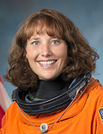

Lyndon B. Johnson Space Center
Houston, Texas 77058
|
National Aeronautics and Space Administration Lyndon B. Johnson Space Center Houston, Texas 77058 |
 |
Biographical Data |
||
DOROTHY M. METCALF-LINDENBURGER
NASA Astronaut (FORMER)
PERSONAL DATA: Born in May 1975, in Colorado Springs, Colorado, but considers Fort Collins, Colorado, her hometown. Married Jason Metcalf-Lindenburger of Pendleton, Oregon, in 2000. They have one child. Her parents are Joyce and Keith Metcalf, who reside in Fort Collins, Colorado. Metcalf-Lindenburger enjoys running marathons, hiking, drawing, singing and playing music.
EDUCATION: Fort Collins High School, Fort Collins, Colorado; Bachelor of Arts, Geology, Whitman College, Washington, 1997 (graduated with honors in her major and cum laude); Teaching Certification, Central Washington University, Washington, 1999.
ORGANIZATIONS: Phi Beta Kappa, Geological Society of America, National Science Teachers Association, International Technology Education Association, National Council of Teachers of Mathematics.
SPECIAL HONORS: Ducan Bonjorni Extraordinary Achievement Award from Central Washington University (2010), Pete Reid Award for Young Alumni from Whitman College (2009), Space Camp Hall of Fame Inductee (2007), VIP for the Vancouver School District (2004), Outstanding Teacher Preparation Candidate at Central Washington University (1999), Geological Society of America (GSA) Field Camp Award (1996) and the following Whitman College Awards: Leed’s Geology Award and Order of the Waiilaptu, National Association of Intercollegiate Athletes (NAIA) Academic All-American in Cross Country and Track (1995-1996) and NAIA Conference Champion in the 10K (1996).
EXPERIENCE: Five years of teaching Earth Science and Astronomy at Hudson’s Bay High School in Vancouver, Washington. Three years of coaching cross-country running at the high-school level and two years of coaching Science Olympiad. Undergraduate research with the KECK Consortium for two summers: Mapping the last glaciations of Russell Creek in Wyoming (1995) and mapping and determining the petrology of the rocks in the Wet Mountain region of Colorado (1996). Both research positions led to publications.
NASA EXPERIENCE: Metcalf-Lindenburger was selected by NASA as a Mission Specialist in May 2004. In February 2006, she completed Astronaut Candidate Training, which included scientific and technical briefings, intensive instruction in shuttle and International Space Station systems, physiological training, T-38 flight training and water and wilderness survival training. Completion of this initial training qualified her for technical assignments within the Astronaut Office and future flight assignment. Metcalf-Lindenburger served as the Astronaut Office Station Branch twig lead for systems and crew interfaces. In 2010, she was a mission specialist on the crew of STS-131 and logged more than 362 hours in space. After her space flight, she worked as a Cape Crusader for the final three shuttle missions. She also supported the Astronaut Office Station Operation Branch as a lead for the provisions, manifests, and stowage twig.
In June 2012, Metcalf-Lindenburger commanded the NASA Extreme Environment Mission Operations (NEEMO) 16. In this underwater habitat, the international crew of four aquanauts and two habitat technicians carried out simulated spacewalks to investigate the techniques and tools that may be used at a Near Earth Asteroid (NEA). Additionally, they operated under a 50-second, one‑way communication delay and conducted educational and public live video appearances.
Metcalf-Lindenburger retired from NASA on June 13, 2014, to live and work in the Seattle area.
SPACEFLIGHT EXPERIENCE: STS-131 Discovery (April 5 to April 20, 2010), a resupply mission to the International Space Station, was launched at night from the Kennedy Space Center, Florida. On arrival at the station, Discovery’s crew dropped off more than 27,000 pounds of hardware, supplies and equipment, including a tank full of ammonia coolant that required three spacewalks to hook up, new crew sleeping quarters and three experiment racks. On the return journey, Leonardo, the Multi-Purpose Logistics Module (MPLM) inside Discovery’s payload bay, was packed with more than 6,000 pounds of hardware, science results and trash. The STS-131 mission was accomplished in 15 days, 02 hours, 47 minutes and 10 seconds and traveled 6,232,235 statute miles in 238 Earth orbits.
MAY 2014
This is the only version available from NASA. Updates must be sought direct from the above named individual.